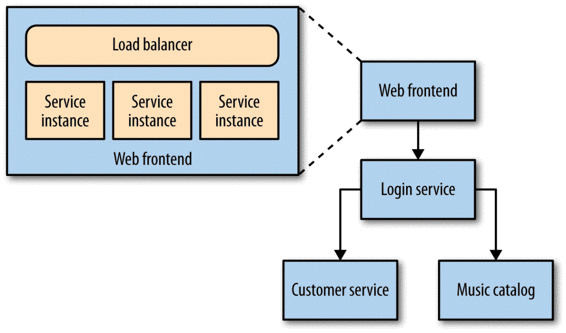

In Figure 8-3, things get much more interesting. Multiple services are collaborating to provide capabilities to our users, and those services are running on multiple hosts — be they physical or virtual. How do you find the error you’re looking for in thousands of lines of logs on multiple hosts? How do you determine if one server is misbehaving, or if it is a systematic issue? And how do you track back an error found deep down in a call chain between multiple hosts and work out what caused it?

Figure 8-3. Multiple collaborating services distributed across multiple hosts
The answer is collection and central aggregation of as much as we can get our hands on, from logs to application metrics.